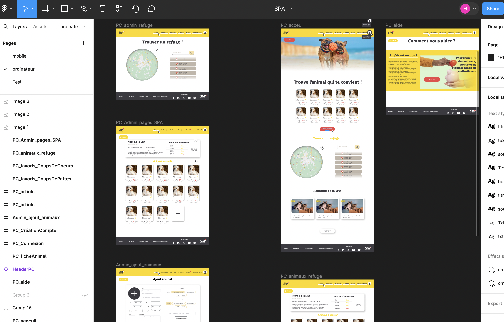
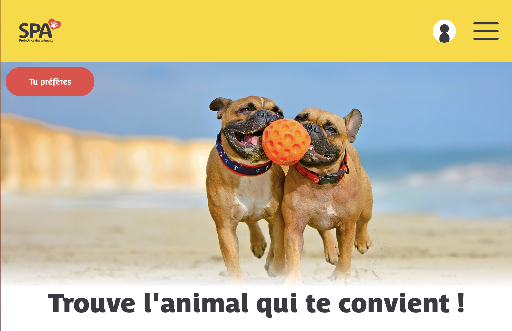

Site | SPA 2024
Description
En groupe de 2 nous devions créer un site (fictif) pour la SPA. Sur ce projet je me suis principalement occupé de la maquette figma et du FRONT END. Sur ce site on retrouve la parti publique qui permet de trouver et liker des animaux et la partie administrateur pour ajouter, modifier ou supprimer des animaux. Le site fonctionne en MVC (Modèle, Vue, Contrôleur) et avec une base de données.
Le site n'est actuelement pas hebergé, mais vous pouvez trouver ci-dessous une page web avec tous les bolcs en html, css et Javascripte, qui on par la suite été mis sur le site en MVC.
Le site n'est actuelement pas hebergé, mais vous pouvez trouver ci-dessous une page web avec tous les bolcs en html, css et Javascripte, qui on par la suite été mis sur le site en MVC.
Pour créer ce site, j’ai d’abord imaginé le design, sur Figma, avec mon binôme. Nous avons cherché à avoir une interface belle, pratique et qui met en valeur les animaux. J’ai ensuite commencé à coder le site en HTML, CSS et Javascript. J'ai donc mis en place le design que l'on a défini. Mon coéquipier s'est lui occupé du développement Back-end.


En codant le Front-end du site, j'ai fait attention à la responsivité. J'ai aussi conçu de nombreuses animations pour améliorer l'UX du site et le rendre plus vivant, avec des animations au survol des boutons, à l'ouverture du menu dépliant où des options du profil et à l'apparition des cartes dans le "tu préfères" une fonctionnalité qui permet de choisir son animal, à adopter, plus facilement.
Outils utilisés pour ce projet
Visual Studio Code
Laragon
Github